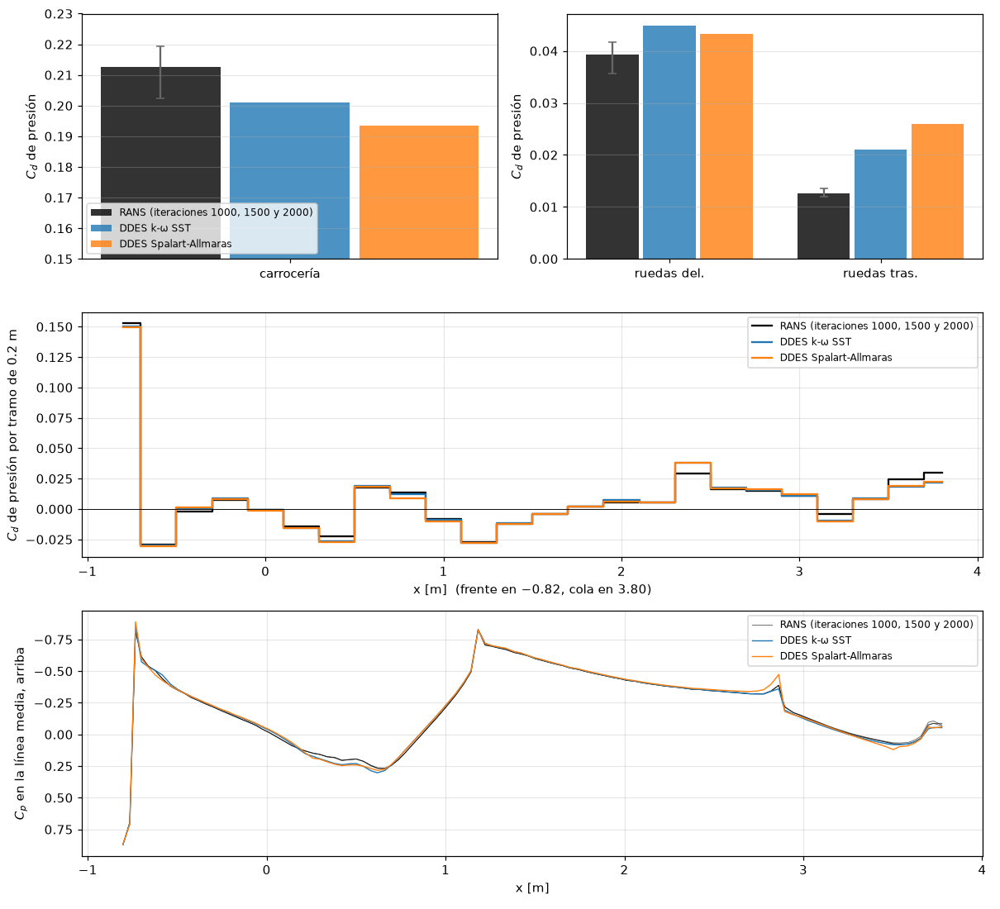
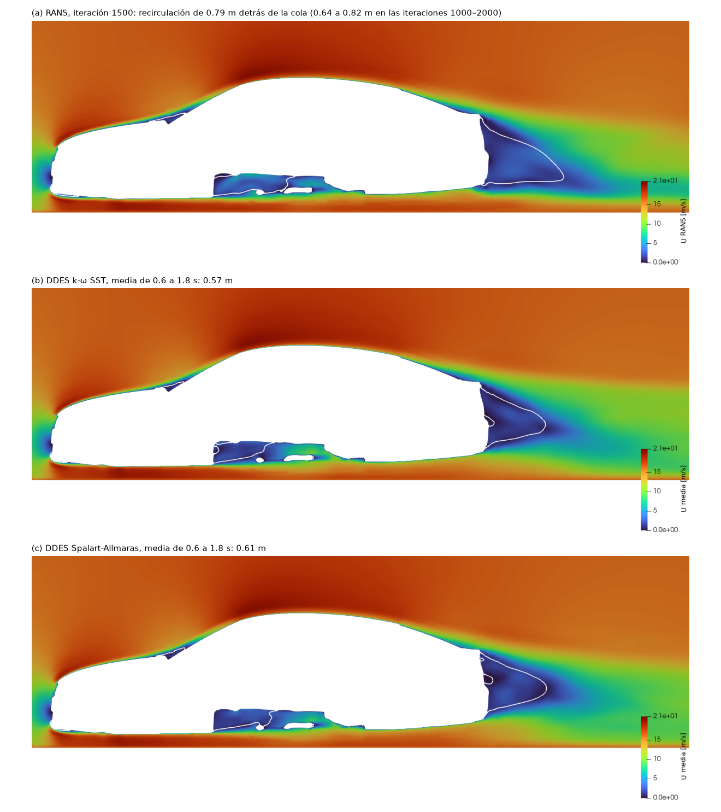
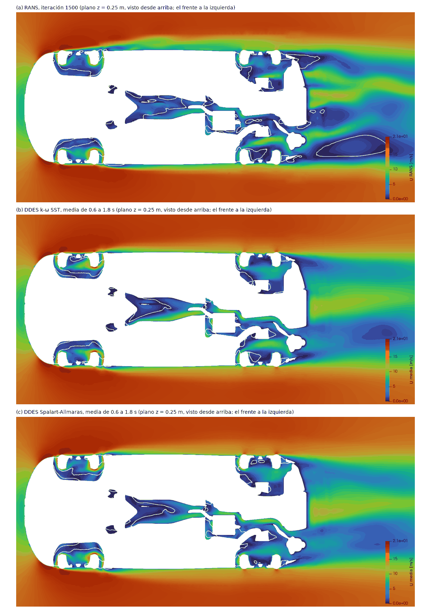
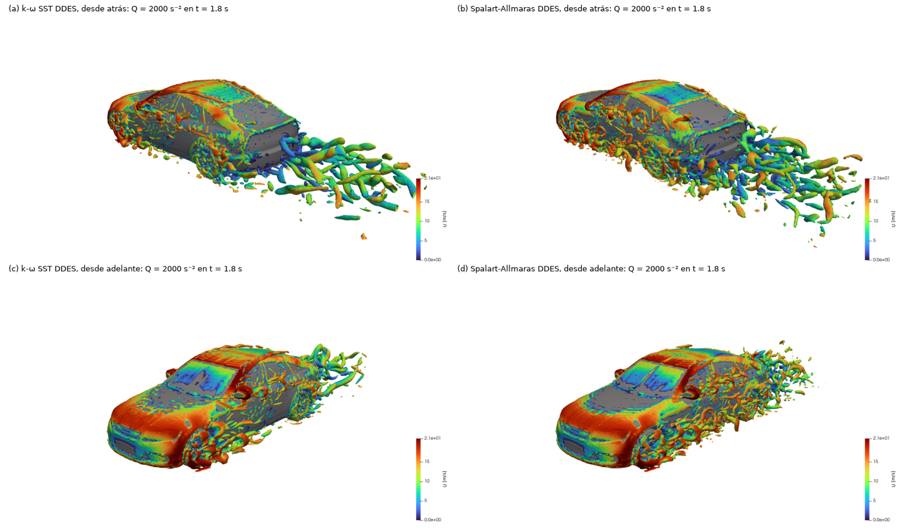

On the Jimny the two DDES models of tutorial 3.7 disagreed by 20 % and there was no measurement to decide. The DrivAer has one. Same mesh recipe, same models: which one matches the wind tunnel?
OpenFOAM · Flujo incompresible · Tutorial 3.8
El DrivAer con los dos DDES
En el Jimny, los dos DDES del 3.7 difirieron 20 % y no había una medición para decidir. El DrivAer la tiene. La misma receta de malla, los mismos modelos: ¿cuál acierta contra el túnel?
OpenFOAM · Inkompressible Strömung · Tutorial 3.8
Der DrivAer mit beiden DDES-Modellen
Beim Jimny unterschieden sich die zwei DDES-Modelle aus Tutorial 3.7 um 20 %, und es gab keine Messung, um zu entscheiden. Der DrivAer hat eine. Gleiches Netzrezept, gleiche Modelle: Welches trifft den Windkanal?
Estimated reading: 45 min (plus about a day of computing per model)Lectura estimada: 45 min (y alrededor de un día de cálculo por modelo)Lesedauer: ca. 45 min (dazu etwa ein Tag Rechenzeit je Modell)Level: undergraduateNivel: licenciaturaNiveau: BachelorVerified on OpenFOAM 12 (blueCFD-Core 2024) and ParaView 5.11.2Verificado en OpenFOAM 12 (blueCFD-Core 2024) y ParaView 5.11.2Geprüft mit OpenFOAM 12 (blueCFD-Core 2024) und ParaView 5.11.2
Full English translation in preparation. Each section below carries a summary of its content; the complete text, figures and tables are available in the Spanish version, which the ES button above selects.
Run the two DDES models of tutorial 3.7 on a car with wind-tunnel data; decide whether two mean drag coefficients differ more than their uncertainty; find where the drag changes (body, wheels, base) with the mean pressure; resume a day-long run after an interruption; say what a validation on one car means for another.
The problem
Two models, one measurement
On the Jimny, SST-DES gave Cd = 0.576 and SA-DDES 0.689. The DrivAer fastback (wind tunnel: 0.243 to 0.247), with the Jimny's mesh recipe, puts both models to the test against a measurement.
The theory
What a validation can decide
Validation compares a computed value and its uncertainty with a measured value and its scatter; two means differ only if their gap exceeds the combined standard error. Where the models of tutorial 3.7 differ: in shear layers that leave sharp edges, which the Jimny has at its front and the DrivAer does not.
Step by step
Three cases, two days of computing
Three cases: drivaer-completo (the full car with the Jimny recipe, about 2 h), drivaer-ddes (SST-DES, about 29 h) and drivaer-ddes-sa (SA-DDES, about 24 h); the tramos script from 0.6 s; foamPostProcess -func Q; ParaView on the decomposed case.
The case
From the Jimny to the DrivAer
What changes from the Jimny DDES: duration and averaging window (one car length takes 0.29 s at 16 m/s), the force functions of the drivaerFastback tutorial, nuTilda created on each processor, and the box of setFieldsDict.
Worked example
RANS, SST-DES, SA-DDES and the wind tunnel
Mean drag from 0.6 to 1.8 s: SST-DES 0.287 ± 0.0015, SA-DDES 0.285 ± 0.0012; RANS 0.276; wind tunnel 0.243 to 0.247. The two DDES models agree within 1.4 combined standard errors, and both lie 15 to 18 % above the tunnel, a little more than RANS. They do not change the total pressure drag; they redistribute it: less suction on the base (Cp −0.07 against −0.10) and a shorter recirculation, more drag on the wheels. The 20 % gap of the Jimny most likely comes from its sharp front edges, which the DrivAer does not have.
Common errors
A day-long run and its averages
A Windows update restarts the computer halfway through: resume from the last written time and join the two force histories before averaging; the RANS solution is not steady, so one iteration is not its mean; a "dominant frequency" in the first bin of the spectrum is not a frequency; averages that started at 0.
Suggested exercise
How much does the tunnel block?
The car blocks 2.7 % of the tunnel cross-section. Repeat the RANS run in a tunnel three times larger in section and measure how much of the gap to the wind tunnel is blockage.
Sources
References
Heft, Indinger and Adams (2012) on the DrivAer model and its wind-tunnel data; Spalart (2009) and Spalart et al. (2006) on DES and DDES; Yazdani (2015) on the DrivAer with SA-DDES; Roache (1998) on validation.
Objetivos de aprendizaje
Qué se debe poder hacer al terminar
El 3.7 calculó el Jimny con dos modelos DDES y obtuvo dos respuestas que difieren 20 %, sin una medición para decidir entre ellas. Esta guía corre los mismos dos modelos, con la misma receta de malla, en el auto que sí tiene medición: el DrivAer del 3.5.
Correr los dos DDES del 3.7 en un vehículo con datos de túnel de viento.
Decidir si dos \(C_D\) medios son distintos o sólo lo parecen, con su error estándar.
Encontrar con la presión media dónde cambia el arrastre: carrocería, ruedas o base.
Reanudar una corrida de un día que se interrumpió, sin perder los promedios.
Decir qué significa para el Jimny lo que se aprende con el DrivAer, y qué no.
Qué hace falta. Los tres casos de esta guía (tabla 1), el tutorial drivaerFastback de OpenFOAM 12 (las superficies del auto se toman de ahí) y tiempo de cómputo: en la laptop de la serie, unas 2 horas el RANS y alrededor de un día cada DDES. Los dos DDES no conviene correrlos al mismo tiempo en la misma computadora: se reparten los núcleos y cada uno tarda el doble. Antes de lanzar una corrida de un día en Windows conviene pausar las actualizaciones automáticas (sección Errores frecuentes, problema 1).
El problema
Dos modelos, una medición
En el Jimny, el DDES con k-ω SST dio \(C_D\) = 0.576 y el de Spalart-Allmaras 0.689: la diferencia, unas diez veces el error estándar de cada media, es del modelo. La isosuperficie \(Q\) del 3.7 mostró dónde nace: las capas de aire que se desprenden de los bordes del frente del Jimny siguen lisas con un modelo y se rompen en remolinos casi desde el borde con el otro. Pero el Jimny no tiene un \(C_D\) medido, así que no hay forma de saber cuál de los dos se acerca más al vehículo real.
El DrivAer fastback sí: su \(C_D\) en el túnel de viento es de 0.243 a 0.247 (Heft, Indinger y Adams, 2012), y el 3.5 y el 3.6 ya lo calcularon con RANS y con la receta del Jimny: 0.276, +12 a +14 % arriba del túnel. La pregunta de esta guía: con la misma malla, ¿acerca alguno de los dos DDES el \(C_D\) del DrivAer al túnel? ¿Y cuál?
Los dos vehículos no se comparan entre sí. El \(C_D\) del DrivAer (alrededor de 0.28) no dice nada del \(C_D\) del Jimny (alrededor de 0.56): son formas distintas. El DrivAer es la pieza patrón del método (3.5): se le aplica lo mismo que al Jimny y, como su \(C_D\) se midió, dice cuánto se equivoca el método. En esta guía se compara otra cosa: cuánto difieren los dos modelos entre sí en cada vehículo. Esa comparación sí tiene sentido, porque el método es el mismo; lo que no se puede hacer es pasarle al Jimny el error del DrivAer.
La teoría
Lo que una validación puede decidir
Lo que son DES y DDES, el paso de tiempo, los promedios y el criterio \(Q\) está en el 3.7. Aquí hacen falta tres ideas más.
Validar es comparar dos incertidumbres
Un cálculo se valida contra una medición (Roache, 1998): la diferencia entre los dos se compara con la incertidumbre de cada uno. La del túnel, para el DrivAer, es la dispersión de las mediciones publicadas, de 0.243 a 0.247 (3.5). La del cálculo tiene varias partes, y el 3.6 las midió para el RANS: la malla, la pared, el dominio, el modelo. La de un DDES tiene una más, que el RANS no tiene: su \(C_D\) oscila, y su media lleva el error estándar que da el guion tramos.
¿Son distintas dos medias?
Dos \(C_D\) medios, \(\bar C_1 \pm e_1\) y \(\bar C_2 \pm e_2\), con sus errores estándar, sólo se pueden llamar distintos si su diferencia es varias veces el error combinado:
Con \(z\) de 1 o menos, la diferencia cabe en el ruido de los promedios; con \(z\) de 3 o más, es real. Entre 1 y 3 no se puede decir con seguridad, y con un error estándar optimista —tramos más cortos que la oscilación más lenta, 3.6— hay que pedir más.
Dónde pueden diferir dos modelos híbridos
Los dos DDES son RANS junto a la pared y LES lejos de ella. Mientras la capa límite está pegada, los dos se comportan como sus modelos RANS; donde el aire se desprende, cada uno pasa de turbulencia modelada a resuelta a su manera, y esa «zona gris» es donde pueden dar cosas distintas (Spalart, 2009). Un cuerpo con bordes vivos al frente, como el Jimny, desprende capas desde el frente, y toda la carrocería queda bajo ellas. Un auto redondeado como el DrivAer lleva la capa límite pegada hasta la cola (sobre el techo, el 3.6 encontró la fricción positiva hasta el borde del fastback): el aire se desprende en ese borde, en la base y alrededor de las ruedas. Si la diferencia del Jimny es de la zona gris del frente, en el DrivAer debería ser mucho menor.
Cuánto dura el cálculo
El DrivAer mide 4.61 m y va a 16 m/s: el aire tarda 0.29 s en recorrer su largo, contra 0.13 s en el Jimny. Por eso el cálculo dura 1.8 s (6.2 largos) y el promedio empieza en 0.6 s (2.1 largos para olvidar el arranque). Con el mismo \(\Delta t\) = 1·10⁻⁴ s del Jimny, en una celda del nivel 6 (1.56 cm) el número de Courant es 0.10: se podría usar un paso mayor, pero se dejó el del 3.7 para que la única diferencia entre los dos vehículos sea el vehículo.
Paso a paso
Tres casos, dos días de cálculo
Los tres casos se descomprimen en $FOAM_RUN, uno junto al otro (tabla 1). En la terminal de blueCFD-Core:
DDES con SpalartAllmarasDDES, lo mismo, con nuTilda creada a partir de nut
24 h
Tabla 1.Los tres casos. Se descomprimen juntos en $FOAM_RUN. Los tiempos son los de la laptop de la serie (8 núcleos, 16 GB).
El RANS.cd $FOAM_RUN/drivaer-completo y ./Allrun. Descomprime las superficies del auto del tutorial de OpenFOAM, hace la malla con la receta del Jimny (3.5) y corre 2000 iteraciones de k-ω SST. Responde con
Running surfaceFeatures on …/drivaer-completo
Running blockMesh on …/drivaer-completo
Running decomposePar on …/drivaer-completo
Running snappyHexMesh in parallel on …/drivaer-completo using 8 processes
Running checkMesh in parallel on …/drivaer-completo using 8 processes
Running foamRun in parallel on …/drivaer-completo using 8 processes
en unas 2 horas. La malla tiene 2 076 004 celdas, y log.checkMesh termina con Failed 1 mesh checks.: son las 78 caras sesgadas que ya se vieron en el 3.5, no un error de la receta.
Su \(C_D\): ./tramos 1000 250, como en el 3.6. Debe dar 0.276.
El DDES con k-ω SST.cd ../drivaer-ddes y ./Allrun. Como el del Jimny, clona la malla y la última iteración de cada processor* del RANS, que pasa a ser su tiempo 0, y corre 1.8 s de flujo. Cada 0.1 s (1000 pasos, alrededor de hora y media) se escribe una carpeta de tiempo. Se vigila desde otra terminal con tail postProcessing/forceCoeffsIncompressible/0/forceCoeffs.dat.
El DDES con Spalart-Allmaras, cuando termine el primero: cd ../drivaer-ddes-sa y ./Allrun. Además de clonar, pasa los campos a texto, crea nuTilda en cada processor* y la fija en la corriente libre con setFields.
El \(C_D\) medio de cada uno: ./tramos 0.6 1000, desde 0.6 s en tramos de 0.1 s.
Los remolinos: mpirun -np 8 foamPostProcess -solver incompressibleFluid -func Q -time 1.8 -parallel en cada caso.
ParaView, sin reconstruir (Case Type: Decomposed Case): un corte en \(y\) = 0 coloreado por UMean; un corte horizontal en \(z\) = 0.25 m, a la altura de los ejes; un Contour de Q = 2000 coloreado por U, con los parches del auto. La presión media sobre el auto, región por región, con la cadena Extract Surface → Generate Surface Normals → Calculator → Integrate Variables del 3.4, sobre pMean.
Si la corrida se interrumpe, no se vuelve a correr el Allrun. Volvería a copiar el tiempo 0 desde el RANS. Una corrida interrumpida se reanuda desde la última carpeta de tiempo escrita (problema 1 de la sección de errores).
El caso
Del Jimny al DrivAer
Los esquemas, el algoritmo y los dos modelos son los del 3.7, archivo por archivo. Cambia lo que depende del vehículo (tabla 2).
Jimny (3.7)
DrivAer (esta guía)
Velocidad, largo
27.78 m/s, 3.64 m
16 m/s, 4.61 m
Un largo del auto
0.13 s
0.29 s
Duración y escritura (controlDict)
1.5 s; cada 0.05 s
1.8 s; cada 0.1 s
Inicio de los promedios (functions)
0.3 s
0.6 s
Fuerzas
forceCoeffs1, parches del Jimny
forceCoeffsIncompressible del tutorial (lee la velocidad y la distancia entre ejes de 0/U); fuerzas en body y las ruedas
nuTilda (Spalart-Allmaras)
en el caso reconstruido, y luego decomposePar
en cada processor*, sin reconstruir
Función de pared de nut
se cambia a nutUSpaldingWallFunction
el DrivAer ya la usa
setFieldsDict
la caja antes del Jimny
\(x\) < −1.1 m (la nariz está en −0.82 m)
Tabla 2.Del DDES del Jimny al del DrivAer. Los esquemas, el algoritmo y los modelos son los del 3.7; cambia lo que depende del auto.
system/controlDict
FoamFile
{
format ascii;
class dictionary;
object controlDict;
}
// * * * * * * * * * * * * * * * * * * * * * * * * * * * * * * * * * * * * * //
application foamRun;
solver incompressibleFluid;
startFrom startTime;
startTime 0; // el tiempo 0 es la iteración 2000 de la corrida RANS del DrivAer completo
stopAt endTime;
endTime 1.8; // el DrivAer mide 4.613 m y va a 16 m/s: un largo cada 0.29 s
deltaT 1e-4;
adjustTimeStep no;
writeControl timeStep;
writeInterval 1000; // cada 0.1 s
purgeWrite 0;
writeFormat binary;
writePrecision 6;
writeCompression off;
timeFormat general;
timePrecision 6;
runTimeModifiable true;
// ************************************************************************* //
18 000 pasos de 1·10⁻⁴ s, con una carpeta de tiempo cada 1000. El tiempo 0 es la iteración 2000 del RANS.
system/functions
FoamFile
{
format ascii;
class dictionary;
object functions;
}
// * * * * * * * * * * * * * * * * * * * * * * * * * * * * * * * * * * * * * //
// Funciones del DDES del DrivAer: las fuerzas en cada paso y los promedios en el tiempo a partir de 0.6 s, cuando
// la estela ya olvidó el arranque desde la solución RANS (unos 2.5 largos del auto).
#includeFunc forceCoeffsIncompressible // Cd, Cl, Cl(f), Cl(r) en cada paso, con el Aref y el lRef del 3.5
#includeFunc residuals(p, U, k, omega)
fuerzas // la fuerza total, para ver la fuerza lateral (la estela de lado a lado)
{
type forces;
libs ("libforces.so");
writeControl timeStep;
writeInterval 1;
patches ("(body|.*Wheels)");
rho rhoInf;
rhoInf 1;
CofR (1.393 0 0);
}
promediosTiempo
{
type fieldAverage;
libs ("libfieldFunctionObjects.so");
startTime 0.6; // startTime en OpenFOAM 12: timeStart (de la versión ESI) se ignora sin aviso
writeControl writeTime;
fields
(
U
{
mean yes;
prime2Mean yes;
}
p
{
mean yes;
prime2Mean yes;
}
);
}
// ************************************************************************* //
forceCoeffsIncompressible es la función del tutorial drivaerFastback, la misma del 3.5; lee la velocidad de referencia y la distancia entre ejes de 0/U, por eso el Allrun copia ese archivo del RANS. fuerzas da la fuerza total en cada paso, para la fuerza lateral y para separar la presión de la fricción. promediosTiempo empieza en 0.6 s con startTime (no timeStart: 3.7, problema 6).
system/setFieldsDict
FoamFile
{
format ascii;
class dictionary;
object setFieldsDict;
}
// * * * * * * * * * * * * * * * * * * * * * * * * * * * * * * * * * * * * * //
// nuTilda de la corriente libre antes del auto (x < -1.1 m; la nariz del DrivAer está en x = -0.816 m): el campo
// inicial viene del nut del RANS, y en Spalart-Allmaras esa turbulencia no decae al viajar: llegaría al auto.
defaultFieldValues
(
);
regions
(
boxToCell
{
box (-11 -6 -1) (-1.1 6 9);
fieldValues
(
volScalarFieldValue nuTilda 4.5e-5
);
}
);
// ************************************************************************* //
Con Spalart-Allmaras, nuTilda se crea a partir del nut del RANS y, antes de la nariz, se fija en 3\(\nu\) = 4.5·10⁻⁵ m²/s, el valor de la entrada: la turbulencia que el RANS de k-ω SST deja en la corriente libre no decaería con Spalart-Allmaras y llegaría al auto (3.7, problema 3).
Ejemplo resuelto
RANS, SST-DES, SA-DDES y el túnel
Enunciado: con las dos corridas DDES de 1.8 s del DrivAer, comparar con el RANS y con el túnel el \(C_D\) medio, su incertidumbre, el reparto del arrastre, la estela media y los remolinos, y decir qué modelo acierta.
1. El arrastre en el tiempo
Figura 1.El arrastre en el tiempo. Los dos DDES arrancan de la iteración 2000 del RANS, que estaba arriba de su media (\(C_D\) = 0.290); en el primer medio segundo bajan hasta 0.25–0.26 y vuelven a subir, mientras la estela pasa de la forma del RANS a la turbulenta. Desde 0.6 s los dos oscilan juntos, un poco arriba del RANS y lejos de la franja del túnel.
Los dos DDES arrancan del \(C_D\) de la iteración 2000 del RANS, 0.290, que estaba arriba de su promedio (problema 2 de la sección de errores). Durante medio segundo bajan y suben mientras la estela del RANS se convierte en la turbulenta; desde 0.6 s oscilan juntos (figura 1). Con ./tramos 0.6 1000 (k-ω SST, con las dos partes de la corrida unidas: problema 1):
$ ./tramos 0.6 1000 cd.dat
Tiempo 0.6001 a 1.8 s, 12 tramos de 1000 pasos
tramo tiempo [s] Cd
1 0.6001-0.7 0.2795
2 0.7001-0.8 0.2904
3 0.8001-0.9 0.2945
4 0.9001-1 0.2924
5 1.0001-1.1 0.2926
6 1.1001-1.2 0.2860
7 1.2001-1.3 0.2871
8 1.3001-1.4 0.2791
9 1.4001-1.5 0.2818
10 1.5001-1.6 0.2858
11 1.6001-1.7 0.2876
12 1.7001-1.8 0.2884
Promedio de los tramos 0.2871
Del menor al mayor tramo 0.2791 a 0.2945
Error estándar de la media 0.0015
Los tramos van de 0.279 a 0.294; con Spalart-Allmaras, de 0.279 a 0.291. Las mitades de la ventana dan 0.289 y 0.285 (k-ω SST) y 0.287 y 0.282 (Spalart-Allmaras): el promedio no se mueve más que su error. La fluctuación del \(C_D\), ±0.007 y ±0.006, es de 7 a 9 veces menor que en el Jimny (±0.047 y ±0.056); comparada con el \(C_D\) de cada uno, 2 % contra 8 %: un auto redondeado tiene una estela más tranquila. La fuerza lateral oscila alrededor de cero, ±0.011 y ±0.013 en \(C_S\).
2. Los números
Cálculo
\(C_D\)
Fluctuación
Sobre el túnel
\(C_{L,f}\)
\(C_{L,r}\)
Recirculación
\(C_p\) de la base
Túnel (Heft et al., 2012)
0.243 a 0.247
RANS, k-ω SST
0.276 ± 0.0008
0.0047
+12 a +14 %
−0.081
0.141
0.75 m
−0.096
DDES, k-ω SST
0.287 ± 0.0015
0.0070
+16 a +18 %
−0.105
0.100
0.57 m
−0.069
DDES, Spalart-Allmaras
0.285 ± 0.0012
0.0063
+15 a +17 %
−0.099
0.089
0.61 m
−0.072
Tabla 3.Los tres cálculos del DrivAer contra el túnel. RANS: iteraciones 1001 a 2000 (tutorial 3.6), con el error estándar corregido por la autocorrelación; DDES: de 0.6 a 1.8 s, con el error estándar de tramos de 0.1 s. La fluctuación es la desviación estándar del \(C_D\) instantáneo. La recirculación es el largo de la zona con \(U_x < 0\) detrás de la cola en el plano medio; el \(C_p\) de la base, el promedio sobre las caras traseras del auto (0.69 m²). Los campos del RANS son la media de sus iteraciones 1000, 1500 y 2000; los de los DDES, sus medias en el tiempo.
La tabla 3 responde la pregunta de la guía. Entre los dos DDES, la diferencia es 0.003 y, con la ecuación (1), \(z\) = 1.4: en el DrivAer, los dos modelos dan el mismo \(C_D\). Contra el RANS, en cambio, los dos suben: +4 % (\(z\) = 6) y +3 % (\(z\) = 6). Y contra el túnel quedan +16 a +18 % y +15 a +17 % arriba: más lejos que el RANS. Ninguno de los dos acierta, y los dos fallan igual.
3. Dónde está el arrastre
RANS
DDES k-ω SST
DDES Spalart-Allmaras
Carrocería, presión
0.213
0.201
0.193
Ruedas delanteras, presión
0.039
0.045
0.043
Ruedas traseras, presión
0.013
0.021
0.026
Presión, total
0.264
0.267
0.263
Fricción
≈ 0.020
0.022
0.024
Tabla 4.Dónde está el arrastre. Arrastre de presión integrado cara por cara sobre cada región con la presión media (el guion campos_drivaer.py de la carpeta de exploración); la fricción, de la función fuerzas. En el RANS, la media de las iteraciones 1000, 1500 y 2000, cuyo \(C_D\) promedia 0.283, 0.006 más que el de las iteraciones 1001 a 2000: sus renglones están un poco altos.
La tabla 4 y la figura 2 dicen por qué el total casi no cambia: los DDES no cambian el arrastre de presión, lo reparten distinto. La carrocería pierde de 0.011 a 0.019 y las ruedas ganan casi lo mismo, sobre todo las traseras (de 0.013 a 0.021 y 0.026). Por tramos, los tres cálculos coinciden de la nariz al final del techo; se separan en tres lugares:
La base (los dos últimos tramos): con los DDES, su \(C_p\) medio sube de −0.096 a −0.069 y −0.072, menos succión en la cara de atrás, y su arrastre baja.
El hueco de la rueda trasera (\(x\) ≈ 2.4 m) y las ruedas traseras: suben. Ahí llega el aire que sale de debajo del auto y de los huecos de las ruedas delanteras, que en los DDES trae remolinos resueltos (figura 5).
El techo: el \(C_p\) de la línea media es el mismo en los tres; el flujo de arriba sigue pegado hasta el borde del fastback.
La fricción sube un poco, de ≈ 0.020 a 0.022 y 0.024. Lo que el DDES gana en la base lo pierde en las ruedas, y el total queda donde estaba, unos puntos arriba.

Figura 2.Dónde cambia el arrastre. Arriba, el arrastre de presión de la carrocería y de las ruedas (en el RANS, la media de tres iteraciones, con su intervalo). En medio, el de la carrocería por tramos de 0.2 m de la nariz a la cola. Abajo, el \(C_p\) sobre la línea media del techo, con el eje invertido (la succión hacia arriba). Los tres cálculos coinciden de la nariz al final del techo; se separan en el hueco de la rueda trasera (\(x\) ≈ 2.4 m), en las ruedas y en la base.
4. La estela

Figura 3.La estela en el plano medio. |U| en \(y\) = 0, de 0 a 21 m/s, con la línea \(U_x\) = 0 en blanco: (a) el RANS en la iteración 1500; (b) y (c) las medias de 0.6 a 1.8 s de los dos DDES. La burbuja de recirculación detrás de la cola es más corta con los DDES, y casi igual con los dos modelos.
En el plano medio (figura 3), la burbuja de recirculación detrás de la cola mide 0.57 m con k-ω SST y 0.61 m con Spalart-Allmaras; la del RANS, entre 0.64 y 0.82 m según la iteración. Una burbuja más corta va con una base menos succionada (tabla 3). Cuál de las dos bases se parece a la del túnel no se puede decir aquí: el \(C_p\) medido de la base del DrivAer sólo está publicado en figuras de pago (3.6). La literatura del DrivAer reporta que un cálculo no estacionario predice la presión de la base y la estela mejor que uno estacionario (Yazdani, 2015); aquí, aunque fuera así, el \(C_D\) total no mejora.

Figura 4.Las estelas de las ruedas. |U| en el plano horizontal \(z\) = 0.25 m, a la altura de los ejes, visto desde arriba, con la línea \(U_x\) = 0: (a) el RANS en la iteración 1500, con una burbuja larga detrás de la rueda trasera derecha: la estela de un RANS que no se asienta es asimétrica; (b) y (c) las medias de los dos DDES, casi simétricas.
A la altura de los ejes (figura 4) se ve la otra mitad de la historia: el aire que sale de los huecos de las ruedas y de debajo del auto. En el RANS, la estela de la iteración 1500 es asimétrica, con una burbuja larga detrás de la rueda trasera derecha; las medias de los DDES son casi simétricas.
5. Los remolinos

Figura 5.Los remolinos. Isosuperficie \(Q\) = 2000 s⁻² en el instante 1.8 s, coloreada por |U|, con k-ω SST (izquierda) y Spalart-Allmaras (derecha), desde atrás (arriba) y desde adelante (abajo). Con Spalart-Allmaras, los costados y las ruedas delanteras se cubren de remolinos pequeños; con k-ω SST, los remolinos son menos y más grandes, también en la estela.
La diferencia que en el Jimny estaba en todo el vehículo aquí se ve en los costados (figura 5). Con Spalart-Allmaras, el aire que sale de las ruedas delanteras y de los postes del parabrisas se rompe en muchos remolinos pequeños que cubren los costados; con k-ω SST, los remolinos son menos y más grandes. Es la misma tendencia del 3.7, con una diferencia de lugar. En el Jimny, los remolinos nacían en las capas que se desprenden de los bordes del frente, y el cofre, el parabrisas, el techo y los costados quedaban bajo flujo desprendido, donde el modelo decide la presión: ahí estuvo 75 % de la diferencia de arrastre entre los dos modelos (3.7). En el DrivAer, la capa límite de la carrocería sigue pegada, la presión de los costados la fija el flujo de afuera, y los remolinos que pasan sobre ella no la cambian: el \(C_p\) del techo es el mismo con los dos modelos (figura 2).
6. El costo
Cálculo
Pasos
Segundos por paso
Horas
Courant máximo
RANS (con la malla aparte)
2 000 iteraciones
3.7
2.1
—
DDES, k-ω SST
18 337
5.75
29.3
2.19
DDES, Spalart-Allmaras
18 000
4.80
24.0
1.71
Tabla 5.Lo que cuesta. En la laptop de la serie, con 8 procesos. La corrida k-ω SST se interrumpió en 1.13 s por un reinicio de Windows y se reanudó desde 1.1 s: 337 pasos se calcularon dos veces (sección de errores, problema 1).
Cada DDES costó de 12 a 14 veces el RANS. Spalart-Allmaras, con una ecuación de turbulencia en lugar de dos, cuesta 17 % menos por paso.
7. Lo que el DrivAer dice del Jimny
El DrivAer no decide entre los dos modelos: con flujo pegado hasta la cola, los dos dan lo mismo. Lo que sí dice:
La diferencia del Jimny parece ser de su forma. Con la misma receta de malla y los mismos modelos, el auto redondeado no distingue a los dos DDES y el vehículo de bordes vivos los separa 20 %. El túnel, la receta de malla y la numérica son los mismos, pero los dos vehículos difieren en más cosas que el frente: toda la forma, las ruedas y la velocidad (27.8 contra 16 m/s), así que es una inferencia, no una prueba; pero es la que explica dónde se separan los modelos. La diferencia nace donde el aire se desprende de un borde, que es donde los modelos híbridos difieren (sección Teoría).
El DDES no corrige el error del método. El RANS del DrivAer queda +12 a +14 % arriba del túnel; los DDES, +15 a +17 % y +16 a +18 %. Lo que sobra no es del modelo de turbulencia: es de lo que tienen en común las tres corridas, la malla con funciones de pared, las ruedas y el dominio (práctica sugerida).
Para el Jimny, el modelo sigue siendo una incertidumbre. Si su arrastre se parece al del DrivAer en cómo responde a la malla, sus tres números (0.564, 0.576 y 0.689) estarían arriba del real; cuál de los dos DDES está más cerca, el DrivAer no lo puede decir, porque no tiene el borde que los separa. Haría falta un vehículo medido con bordes vivos al frente, como los del Jimny.
Resultado: el \(C_D\) medio del DrivAer es 0.287 ± 0.0015 con DDES k-ω SST y 0.285 ± 0.0012 con DDES Spalart-Allmaras, iguales dentro de su incertidumbre (\(z\) = 1.4), contra 0.276 del RANS y 0.243–0.247 del túnel. Los DDES reparten distinto el arrastre —menos succión en la base, más en las ruedas— pero no lo acercan al túnel. Lo más probable es que la diferencia de 20 % entre los dos modelos en el Jimny venga de sus bordes vivos, no de los modelos en general.
Errores frecuentes
Una corrida de un día y sus promedios
Los cuatro salieron al preparar esta guía.
1. Una actualización de Windows a medio cálculo
En la madrugada del segundo día, Windows instaló una actualización y reinició la laptop. El DDES de k-ω SST iba en 1.1337 s; el registro termina a la mitad de ese paso, con el único aviso que dejó MS-MPI:
GAMG: Solving for p, Initial residual = 0.00693432, Final residual = 0.000164702, No Iterations 2
time step continuity errors : sum local = 6.55181e-11, global = 1.93977e-14
GAMG: Solving for p, Initial residual = 0.000639439, Final residual = 2.40731e-05, No Iterations 2
time step continuity errors : sum local = 9.57583e-12, global = -6.0389e-15
Aborting: mpiexec on ACER-CARLOSMH failed to communicate with smpd manager on ACER-CARLOSMH
La última carpeta de tiempo escrita era la 1.1.
Remedio. No se vuelve a correr el Allrun (copiaría otra vez el tiempo 0 del RANS): se reanuda desde la última carpeta de tiempo. En el caso, con la terminal de blueCFD:
Se pierde lo calculado desde la última escritura (aquí, 0.034 s: 337 pasos, 32 minutos). Los promedios de los campos siguen bien: fieldAverage guarda su cuenta en uniform/ de cada carpeta de tiempo y continúa desde ahí. Las fuerzas, en cambio, empiezan un archivo nuevo, en postProcessing/forceCoeffsIncompressible/1.1, y el guion tramos sólo lee el de 0. Sin unirlos, el promedio sale de la primera parte de la corrida:
$ ./tramos 0.6 1000
Tiempo 0.6001 a 1.1 s, 5 tramos de 1000 pasos
tramo tiempo [s] Cd
1 0.6001-0.7 0.2795
2 0.7001-0.8 0.2904
3 0.8001-0.9 0.2945
4 0.9001-1 0.2924
5 1.0001-1.1 0.2926
Promedio de los tramos 0.2899
Del menor al mayor tramo 0.2795 a 0.2945
Error estándar de la media 0.0027
0.2899 ± 0.0027 en lugar de 0.2871 ± 0.0015: cinco tramos en lugar de doce, y un número que parece bueno. Las dos partes se unen con el primer archivo hasta 1.1 s y el segundo completo, y el guion acepta el archivo como tercer argumento:
Lo que evita el problema es pausar las actualizaciones automáticas de Windows (Configuración → Windows Update → Pausar actualizaciones) antes de lanzar una corrida de un día.
2. Un RANS que no se asienta
El \(C_D\) del RANS del DrivAer no se queda quieto: de la iteración 1001 a la 2000 va de 0.266 a 0.292, con una media de 0.276. Sus campos sólo se guardaron en las iteraciones 1000, 1500 y 2000, con \(C_D\) 0.282, 0.276, 0.290; la 2000, de donde arrancan los DDES, está en el extremo de arriba. Comparar la estela de un DDES con la de una sola iteración del RANS es comparar una media con un instante: la recirculación del RANS mide de 0.64 a 0.82 m según la iteración que se tome. Remedio: comparar medias con medias. Aquí, los campos del RANS son la media de sus tres iteraciones guardadas (tabla 4), con la advertencia de que su \(C_D\) promedia 0.283; para hacerlo bien, se agrega fieldAverage a las funciones del RANS desde la iteración 1000.
3. Una frecuencia que no es
El análisis de esta guía buscó, como el del 3.7, el máximo del espectro del \(C_D\). Con k-ω SST lo encontró en 0.83 Hz, que es 1/1.2 s: el primer intervalo del espectro de una ventana de 1.2 s, es decir, una deriva lenta que dura toda la ventana, no una oscilación. Con Spalart-Allmaras, en 2.5 Hz, apenas sobre sus vecinos. El espectro del DrivAer es de banda ancha, sin un pico. Remedio: antes de reportar una frecuencia, ver el espectro y pedir que el pico sobresalga claramente y esté a varios intervalos del primero; una frecuencia de unos cuantos hertz pide una ventana de varios segundos.
4. Promedios que empezaron en 0
La corrida de k-ω SST de esta guía se lanzó antes de descubrir el problema 6 del 3.7, con timeStart, y sus campos medios acumularon desde el tiempo 0, con el arranque incluido. No hubo que repetirla: con el paso de tiempo fijo, la media de 0.6 a 1.8 s sale de las medias acumuladas en las carpetas 1.8 y 0.6, \(\bar u_{0.6\text{–}1.8} = (18000\,\bar u_{1.8} - 6000\,\bar u_{0.6})/12000\). Remedio:startTime 0.6;, como traen los dos casos, y no borrar las carpetas de tiempo intermedias hasta revisar uniform/promediosTiempoProperties.
Práctica sugerida
¿Cuánto estorba el túnel?
¿Cuánto estorba el túnel?
Enunciado. El túnel de drivaer-completo mide 10 m de ancho y 8 m de alto; el auto tapa 2.7 % de la sección. El aire que rodea al auto se acelera más que en un túnel sin paredes, y el arrastre sube. Repetir el RANS en un túnel tres veces mayor en sección y medir cuánto de la diferencia con el túnel de viento es bloqueo. Llenar la tabla 6.
Condiciones. El mismo caso, con la malla de fondo más grande; la receta del auto no cambia.
El procedimiento, en corto
Copiar drivaer-completo a drivaer-grande y correr su Allclean.
En system/blockMeshDict: \(y\) de −10 a 10 m y \(z\) de 0 a 12 m, con cubos de 1 m (yCells 20, zCells 12).
./Allrun y ./tramos 1000 250.
Registro de resultados
Túnel
Sección
Bloqueo
Celdas
\(C_D\) (1001–2000)
Sobre el túnel
10 × 8 m
80 m²
2.7 %
2 076 004
0.276 ± 0.0008
+12 a +14 %
20 × 12 m
240 m²
0.9 %
Tabla 6.Registro de la práctica. La sección del túnel es \((y_{max} - y_{min})(z_{max} - z_{min})\); el bloqueo, el área frontal del DrivAer (2.154 m²) entre esa sección. El primer renglón es el de drivaer-completo.
Preguntas que orientan la lectura
¿Cuántas celdas agrega el túnel grande? ¿Por qué tan pocas?
¿Cuánto baja el \(C_D\)? ¿Qué parte de la diferencia con el túnel de viento explica?
El túnel de viento también tiene paredes. ¿Por qué su medición no lleva el mismo error? (Las mediciones publicadas ya vienen corregidas por bloqueo.)
Si el bloqueo explica una parte, ¿qué queda para la malla y las ruedas? ¿Cómo se separarían?
Fuentes
Referencias
Heft, A. I., Indinger, T. y Adams, N. A. (2012). Introduction of a new realistic generic car model for aerodynamic investigations (SAE Technical Paper 2012-01-0168). SAE International.
Roache, P. J. (1998). Verification and validation in computational science and engineering. Hermosa Publishers.
Spalart, P. R. (2009). Detached-eddy simulation. Annual Review of Fluid Mechanics, 41, 181–202.
Spalart, P. R., Deck, S., Shur, M. L., Squires, K. D., Strelets, M. Kh. y Travin, A. (2006). A new version of detached-eddy simulation, resistant to ambiguous grid densities. Theoretical and Computational Fluid Dynamics, 20, 181–195.
Yazdani, R. (2015). Steady and unsteady numerical analysis of the DrivAer model (tesis de maestría 2015:34). Chalmers University of Technology.
Las cifras son de las dos corridas DDES de 1.8 s del DrivAer y de su corrida RANS, hechas en la misma computadora con blueCFD-Core 2024 (OpenFOAM 12) y 8 procesos, en octubre de 2026; las imágenes, de ParaView 5.11.2 sin ventana (pvbatch) y de matplotlib sobre esas corridas.
Lernziele
Was Sie danach können sollten
Vollständige deutsche Übersetzung in Vorbereitung. Jeder Abschnitt enthält eine Zusammenfassung; der vollständige Text mit Abbildungen und Tabellen liegt in der spanischen Fassung vor, die über die Schaltfläche ES oben erreichbar ist.
Die zwei DDES-Modelle aus Tutorial 3.7 an einem Auto mit Windkanaldaten rechnen; entscheiden, ob sich zwei mittlere Widerstandsbeiwerte stärker unterscheiden als ihre Unsicherheit; mit dem mittleren Druck finden, wo sich der Widerstand ändert (Karosserie, Räder, Heck); eine tagelange Rechnung nach einer Unterbrechung fortsetzen; sagen, was eine Validierung an einem Auto für ein anderes bedeutet.
Das Problem
Zwei Modelle, eine Messung
Beim Jimny ergab SST-DES Cd = 0,576 und SA-DDES 0,689. Der DrivAer Fastback (Windkanal: 0,243 bis 0,247) mit dem Netzrezept des Jimny stellt beide Modelle auf die Probe gegen eine Messung.
Die Theorie
Was eine Validierung entscheiden kann
Eine Validierung vergleicht einen berechneten Wert und seine Unsicherheit mit einem gemessenen Wert und seiner Streuung; zwei Mittelwerte unterscheiden sich nur, wenn ihr Abstand den kombinierten Standardfehler übersteigt. Wo sich die Modelle aus 3.7 unterscheiden: in Scherschichten, die sich an scharfen Kanten lösen; der Jimny hat sie vorne, der DrivAer nicht.
Schritt für Schritt
Drei Fälle, zwei Tage Rechenzeit
Drei Fälle: drivaer-completo (das ganze Auto mit dem Jimny-Rezept, etwa 2 h), drivaer-ddes (SST-DES, etwa 29 h) und drivaer-ddes-sa (SA-DDES, etwa 24 h); das Skript tramos ab 0,6 s; foamPostProcess -func Q; ParaView auf dem zerlegten Fall.
Der Fall
Vom Jimny zum DrivAer
Was sich gegenüber der DDES des Jimny ändert: Dauer und Mittelungsfenster (eine Wagenlänge dauert 0,29 s bei 16 m/s), die Kraftfunktionen des Tutorials drivaerFastback, nuTilda auf jedem Prozessor erzeugt, und die Box von setFieldsDict.
Durchgerechnetes Beispiel
RANS, SST-DES, SA-DDES und der Windkanal
Mittlerer Widerstand von 0,6 bis 1,8 s: SST-DES 0,287 ± 0,0015, SA-DDES 0,285 ± 0,0012; RANS 0,276; Windkanal 0,243 bis 0,247. Die zwei DDES-Modelle stimmen innerhalb von 1,4 kombinierten Standardfehlern überein, und beide liegen 15 bis 18 % über dem Kanal, etwas mehr als RANS. Sie ändern den gesamten Druckwiderstand nicht, sie verteilen ihn um: weniger Sog am Heck (Cp −0,07 gegen −0,10) und ein kürzeres Rückströmgebiet, mehr Widerstand an den Rädern. Der Unterschied von 20 % beim Jimny kommt wahrscheinlich von seinen scharfen Vorderkanten, die der DrivAer nicht hat.
Häufige Fehler
Eine tagelange Rechnung und ihre Mittelwerte
Ein Windows-Update startet den Rechner mitten in der Rechnung neu: ab dem letzten geschriebenen Zeitpunkt fortsetzen und die zwei Kraftverläufe vor dem Mitteln zusammenfügen; die RANS-Lösung ist nicht stationär, eine Iteration ist nicht ihr Mittel; eine „dominante Frequenz“ im ersten Intervall des Spektrums ist keine Frequenz; Mittelwerte, die bei 0 begannen.
Übungsvorschlag
Wie stark versperrt der Kanal?
Das Auto versperrt 2,7 % des Kanalquerschnitts. Die RANS-Rechnung in einem Kanal mit dreifachem Querschnitt wiederholen und messen, wie viel der Abweichung zum Windkanal von der Versperrung kommt.
Quellen
Literatur
Heft, Indinger und Adams (2012) zum DrivAer-Modell und seinen Windkanaldaten; Spalart (2009) und Spalart et al. (2006) zu DES und DDES; Yazdani (2015) zum DrivAer mit SA-DDES; Roache (1998) zur Validierung.